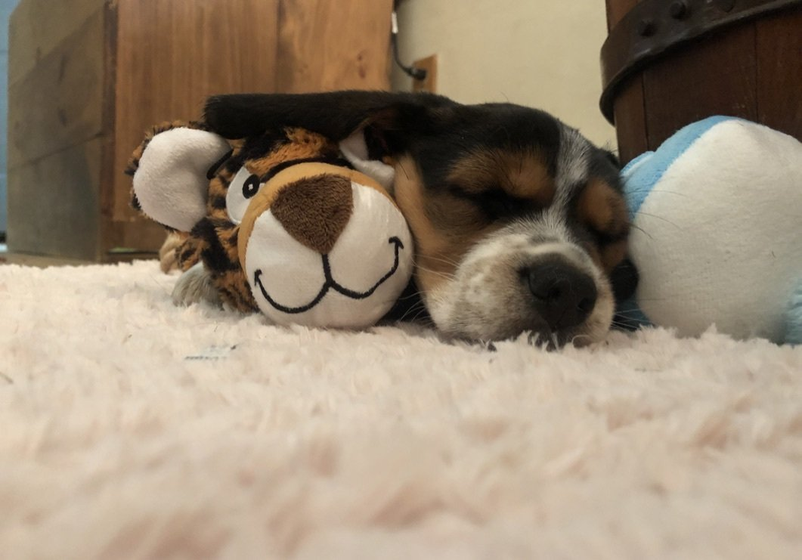
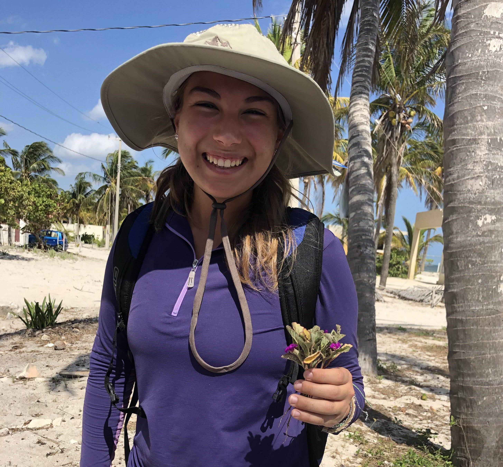
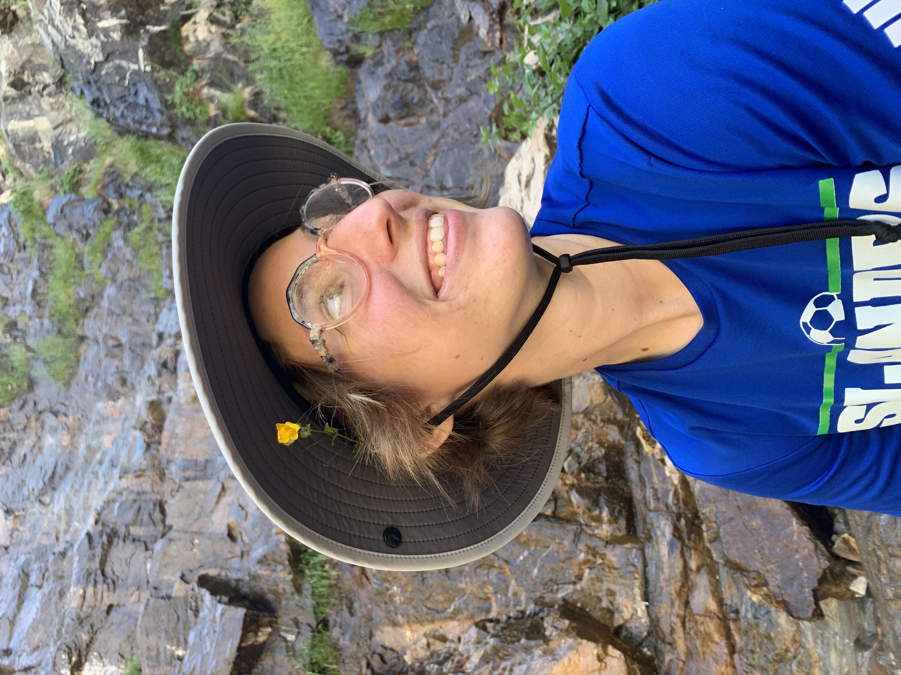
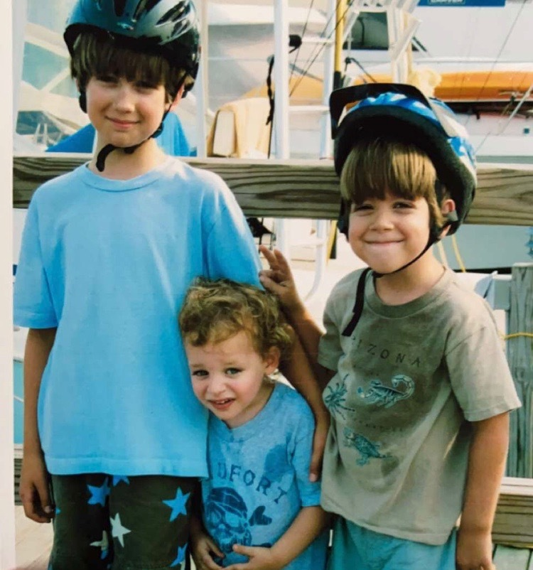

Lab Members - Wessinger Lab
Lab Members

Carolyn Wessinger
aka Carrie
Carrie started the lab at the University of South Carolina in the Spring of 2020. She earned her BS in Biology from Brown University where she gained an appreciation for organismal and evolutionary biology. She then worked with Mark Rausher at Duke University for her PhD and worked with Lena Hileman (and John Kelly) at the University of Kansas for her postdoc, all current collaborators. She is fascinated by the phenomenon of parallel evolution. Outside of work, she loves exploring the natural beauty of South Carolina and in general can't wait for the next field season!


Josh Stevens
Josh obtained his undergraduate degree at Keene State College and is now a PhD student at the University of South Carolina. Josh's research focuses on gene flow and mating patterns within various species of Penstemon. He is broadly interested in evolutionary ecology & bioinformatics. He enjoys hiking, kayaking, and exploring new areas. Josh joined the Wessinger lab in the fall of 2020.
Josh says this picture of his puppy is a good representation of who he is as a person.

Trinity Depatie
Trinity is a PhD student at the University of South Carolina focusing on the evolution of morphological floral traits in the Eastern Clade of the genus Penstemon. Trinity has broad interests in floral evolution, ecology, and genetics. She obtained her undergraduate degree at Florida Atlantic University’s Wilkes Honors College and later joined the Wessinger lab in the fall of 2020. Outside of the lab Trinity enjoys running and riding horses.

Ashley Hamilton
Ashley is a lab technician who graduated with a BS in Biology from Texas A&M University-Corpus Christi in Fall 2019. She was originally planning on pursuing marine biology but fell in love with plants and evolution during an undergrad course. Since then, she has pursued these avenues of research passionately, conducting research on a variety of organisms from limpets to seagrass. Currently, she is working on several projects in the Wessinger Lab including analyzing morphological traits and geographic variables to try to understand underlying evolutionary processes at both the population and species level within Penstemon.

Nimue' Shive
Nimue’ Shive is an undergraduate lab assistant in the Wessinger Lab. She is a sophomore enrolled in The University of South Carolina Honors College and is majoring in Environmental Science. In the Wessinger Lab, she assists with plant care and is helping map Penstemon species ranges. She enjoys hiking, art, and chocolate cake.

Clayton Bellinger
aka Clay
Clay is an undergraduate lab assistant in the Wessinger Lab. He is a junior Chemistry major at The University of South Carolina. He keeps over 350 species of plants, many of which are featured on his instagram. He has a special interest in species that are uncommon or ethnobotanically significant. In the Wessinger Lab, he assists with plant care and DNA extractions. He likes to hike and he likes his pet fishes.


Hoyt Williams
Hoyt is an Undergraduate Lab Assistant in the Wessinger Lab. He is a Sophomore majoring in Biology with a minor in Chemistry. He is just getting started in the Wessinger Lab, and he assists with plant care and general lab maintenance. Outside the lab, Hoyt enjoys hiking, being active outside, and spending time with his friends.
Hoyt thinks that this picture (taken over 10 years ago) of him, his older brother, and his cousin is a perfect depiction of his personality today.